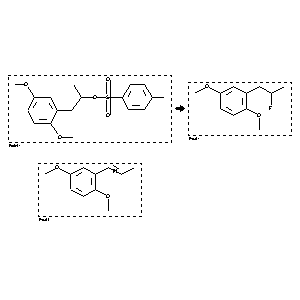

|  |
| FA | RX(1); FLST(1); RX(3) |
Reaction (1 of 1)
| Reaction ID | 4520100 |
| Reactant BRN | 3108217 |
| Reactant | 2-(2-p-Tosyloxy-propyl)-hydrochinondimethylether |
| Product BRN | 7528602; 7526263 |
| Product | (+/-)-1-(2,5-Dimethoxyphenyl)-2-fluoropropane; (E)-1-(2,5-Dimethoxyphenyl)-1-propene |
| No. of Reaction Details | 3 |
Reaction Details (1 of 1)
| Reaction Classification | Chemical behaviour |
| Yield | 34 percent (BRN=7528602); 59 percent (BRN=7526263) |
| Reagent | (n-Bu)4NF |
| Solvent | tetrahydrofuran |
| Time | 16 hour(s) |
| Temperature | 20 |
| Pressure | 1.12509E+07 |
| Other Conditions | other temperatures, pressures and reaction times |
| Subject Studied | Product distribution |
| Citation Pointer | 6026744; Journal; Gerdes, John M.; Keil, Robert N.; Shulgin, Alexander T.; Mathis, Chester A.; JFLCAR; J.Fluorine Chem.; EN; 78; 2; 1996; 121-130; |
Reaction Details (2 of 1)
| Reaction Classification | Preparation |
| Yield | 59 percent (BRN=7526263); 34 percent (BRN=7528602) |
| Reagent | (n-Bu)4NF |
| Solvent | tetrahydrofuran |
| Time | 16 hour(s) |
| Temperature | 20 |
| Pressure | 1.12509E+07 |
| Citation Pointer | 6026744; Journal; Gerdes, John M.; Keil, Robert N.; Shulgin, Alexander T.; Mathis, Chester A.; JFLCAR; J.Fluorine Chem.; EN; 78; 2; 1996; 121-130; |
Reaction Details (3 of 1)
| Reaction Classification | Preparation |
| Yield | 34 percent (BRN=7528602); 59 percent (BRN=7526263) |
| Reagent | (n-Bu)4NF |
| Solvent | tetrahydrofuran |
| Time | 16 hour(s) |
| Temperature | 20 |
| Pressure | 1.12509E+07 |
| Citation Pointer | 6026744; Journal; Gerdes, John M.; Keil, Robert N.; Shulgin, Alexander T.; Mathis, Chester A.; JFLCAR; J.Fluorine Chem.; EN; 78; 2; 1996; 121-130; |
Reference (1 of 1)
| Citation Number | 6026744 |
| Document Type | Journal |
| Authors | Gerdes, John M.; Keil, Robert N.; Shulgin, Alexander T.; Mathis, Chester A. |
| CODEN | JFLCAR |
| Journal Title | J.Fluorine Chem. |
| Language Code | EN |
| (Series) Volume | 78 |
| Number | 2 |
| Publication Year | 1996 |
| Page | 121-130 |